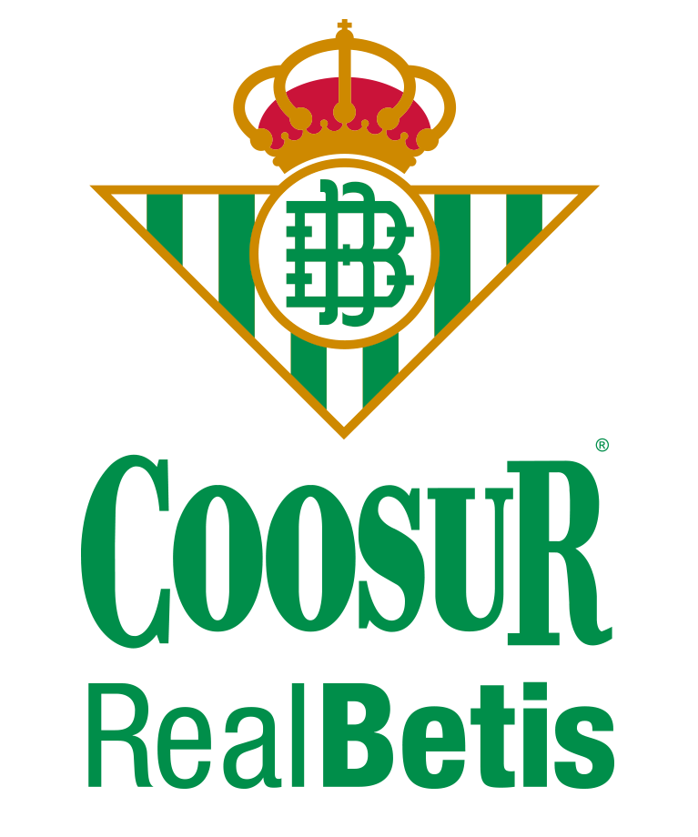

Aquí verá las noticias de última hora sobre los equipos españoles sobre contra quienes juegan y cómo va a ser el pronóstico del partido
https://www.google.es/url?sa=t&rct=j&q=&esrc=s&source=newssearch&cd=&cad=rja&uact=8&ved=0ahUKEwjlwaHIh6vtAhWai1wKHTN6BNwQxfQBCDswAQ&url=https%3A%2F%2Fas.com%2Fbaloncesto%2F2020%2F11%2F27%2Feuroliga%2F1606454094_917964.html&usg=AOvVaw0uSTZPZILi-Q7hrZHsOw_d https://www.google.es/url?sa=t&rct=j&q=&esrc=s&source=newssearch&cd=&cad=rja&uact=8&ved=0ahUKEwjlwaHIh6vtAhWai1wKHTN6BNwQxfQBCEowAw&url=https%3A%2F%2Fwww.marca.com%2Fbaloncesto%2Feuroliga%2F2020%2F11%2F27%2F5fc1745d22601dd77e8b45c9.html&usg=AOvVaw0tMe19FE3oUSIP_p5VTah2En ésta sección podremos ver los fichajes de cada club y los jugadores que se van de cada club
https://www.google.es/url?sa=t&rct=j&q=&esrc=s&source=newssearch&cd=&cad=rja&uact=8&ved=0ahUKEwiwmMiUiavtAhUgQ0EAHT1hDlYQxfQBCEswAw&url=https%3A%2F%2Fwww.marca.com%2Fbaloncesto%2Facb%2F2020%2F11%2F30%2F5fc5176946163fea6d8b45ca.html&usg=AOvVaw3Hs6rngEN-IjBGCCRamUWT https://www.google.es/url?sa=t&rct=j&q=&esrc=s&source=newssearch&cd=&cad=rja&uact=8&ved=0ahUKEwiwmMiUiavtAhUgQ0EAHT1hDlYQxfQBCHMwCA&url=https%3A%2F%2Fwww.marca.com%2Fbaloncesto%2Facb%2F2020%2F11%2F24%2F5fbd03f6e2704e3b058b45ee.html&usg=AOvVaw22IKoV7YC8JEDaUZdx-YVBEquipos de la liga
| ACUNSA GBC | San Sebastián Arena 2016 | |
| BARÇA | Palau Blaugrana | |
| BAXI MANRESA | Pavelló Nou Congost |  |
| CASADEMONT ZARAGOZA | Pabellón Príncipe Felipe | |
| CLUB JOVENTUT BADALONA | Palau Municipal D´Esports de Badalona |  |
| COOSUR REAL BETIS | Palacio Municipal de Deportes San Pablo |  |
| HERBALIFE GRAN CANARIA | Gran Canaria Arena |  |
| HEREDA SAN PABLO BURGOS | Coliseum Burgos | |
| IBEROSTAR TENERIFE | Pabellón de Deportes de Tenerife Santiago Martín | |
| MONBUS OBRADOIRO | Multiusos Fontes do Sar | |
| MORABANC ANDORRA | Poliesportiu d'Andorra |  |
| MOVISTAR ESTUDIANTES | WiZink Center | |
| REAL MADRID | WiZink Center |  |
| RETABET BILBAO BASKET | Bilbao Arena | TD SYSTEMS BASKONIA | Fernando Buesa Arena |
| UCAM MURCIA CB | Palacio de Deportes de Murcia |  |
| UNICAJA | Palacio de Deportes José María Martín Carpena |  |
| URBAS FUENLABRADA | Pabellón Fernando Martín | |
| VALENCIA BASKET CLUB | Pabellón Fuente de San Luis |
Los favoritos para ganar la liga Endesa
En ésta nueva noticia para nuestros lectores les hacemos ver cuáles son los favoritos para ganar el campeonato y por si su equipo está en los favoritos o si al final de temporada su equipo favorito da la sorpresa. Ésta lista está ordenada del "mejor" al "peor"
- Barcelona
- Real Madrid
- Baskonia Vitoria
- Valencia Basket
- Iberostar Tenerife
- Unicaja Málaga
- BC Andorra
- Hereda San Pablo Burgos
- Club Joventut Badalona
- Movistar Estudiantes
- Basquet Manresa
- Monbus Obradoiro
- Bilbao Basket
- Herbalife Gran Canaria
- Casademont Zaragoza
- Casademont Zaragoza
- Fuenlabrada
- Coosur Real Betis
- Gipuzkoa
La ida de Facundo Campazo
Ayer Sábado día 21/11/2020 Facundo Campazzo,estrella del Real Madrid,liga española y de la euroliga,dejó la disciplina blanca para firmar con los Denver Nuggets en la tan conocida agencia libre. Aquí les dejo varios artículos y un vídeo con más detalle sobre la marcha y el contrato que ha firmado la estrella argentina https://www.google.es/url?sa=t&rct=j&q=&esrc=s&source=newssearch&cd=&cad=rja&uact=8&ved=2ahUKEwjMrJespZbtAhURlxQKHVF-AgcQ5fUFegQIARAT&url=https%3A%2F%2Fwww.mundodeportivo.com%2Fbaloncesto%2F20201121%2F49555980363%2Fconfirmado-campazzo-deja-el-real-madrid-rumbo-a-los-denver-nuggets.html&usg=AOvVaw0FoUdHKlOSTWkgsr5_53Ta https://www.google.es/url?sa=t&rct=j&q=&esrc=s&source=newssearch&cd=&cad=rja&uact=8&ved=2ahUKEwibkbri-ZntAhVx8OAKHeRDDmYQ-MoFegQIABAF&url=https%3A%2F%2Felpais.com%2Fdeportes%2F2020-11-21%2Fcampazzo-da-el-salto-a-la-nba-y-ficha-por-los-denver-nuggets-para-las-dos-proximas-temporadas.html&usg=AOvVaw04R_0iKOu5OehyHOMd4uNS https://www.google.es/url?sa=t&rct=j&q=&esrc=s&source=newssearch&cd=&cad=rja&uact=8&ved=2ahUKEwibkbri-ZntAhVx8OAKHeRDDmYQ-MoFegQIABAP&url=https%3A%2F%2Fwww.marca.com%2Fbaloncesto%2Fnba%2F2020%2F11%2F21%2F5fb84f8746163f692b8b464a.html&usg=AOvVaw0EogBwzytuJcZG_pbmaj51 https://www.youtube.com/watch?v=WmFuBtfzYg8
Leandro se mantiene
Tras a haber sido seleccionado por los New York Knicks y traspasado a los Minnesota Timberwolves en el número 23 en el Draft. Pero tras todo éste movimiento el base argentino decide quedarse en la entidad del Barcelona otro año más para adquirir más experiencia en el baloncesto europeo. En los siguientes enlaces y vídeo les vendrá más información detallada sobre su decisión. https://www.google.es/url?sa=t&rct=j&q=&esrc=s&source=newssearch&cd=&cad=rja&uact=8&ved=2ahUKEwiFpf_TsJbtAhUE_BQKHeXhBG4Q-MoFegQIABAK&url=https%3A%2F%2Fm.europapress.es%2Fdeportes%2Fbaloncesto-00163%2Fnoticia-leandro-bolmaro-messi-basket-da-largas-nba-20201120124739.html&usg=AOvVaw0bTfXIT_WqJ69bPY013uVR https://www.google.es/url?sa=t&rct=j&q=&esrc=s&source=newssearch&cd=&cad=rja&uact=8&ved=0ahUKEwjh-MzY-pntAhVuA2MBHQH-CLEQxfQBCEswAw&url=https%3A%2F%2Fwww.mundodeportivo.com%2Fbaloncesto%2Fnba%2F20201119%2F49547685232%2Fbolmaro-confirma-que-seguira-en-el-barca-esta-temporada.html&usg=AOvVaw3vBVgUJaMd6uxGo6PQAw2u https://www.google.es/url?sa=t&rct=j&q=&esrc=s&source=newssearch&cd=&cad=rja&uact=8&ved=0ahUKEwjh-MzY-pntAhVuA2MBHQH-CLEQxfQBCEMwAg&url=https%3A%2F%2Fwww.fcbarcelona.es%2Fes%2Fbaloncesto%2Fprimer-equipo%2Fnoticias%2F1899986%2Fleandro-bolmaro-es-tiempo-de-devolver-al-barca-su-confianza&usg=AOvVaw2WjjXWSPbby7wpSvwHoS91 https://www.youtube.com/watch?v=UWqI6rK46Bw
texto en color negro